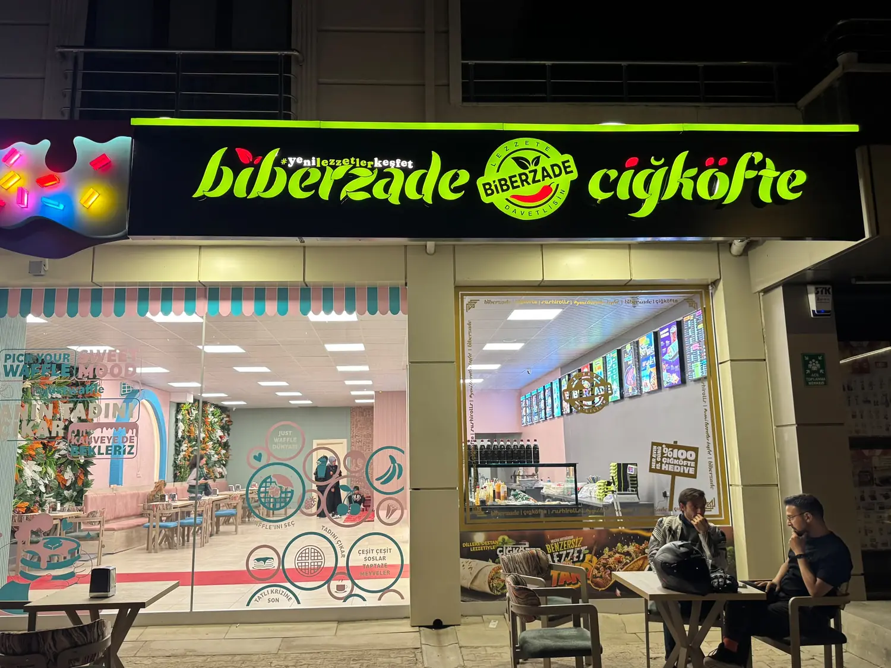
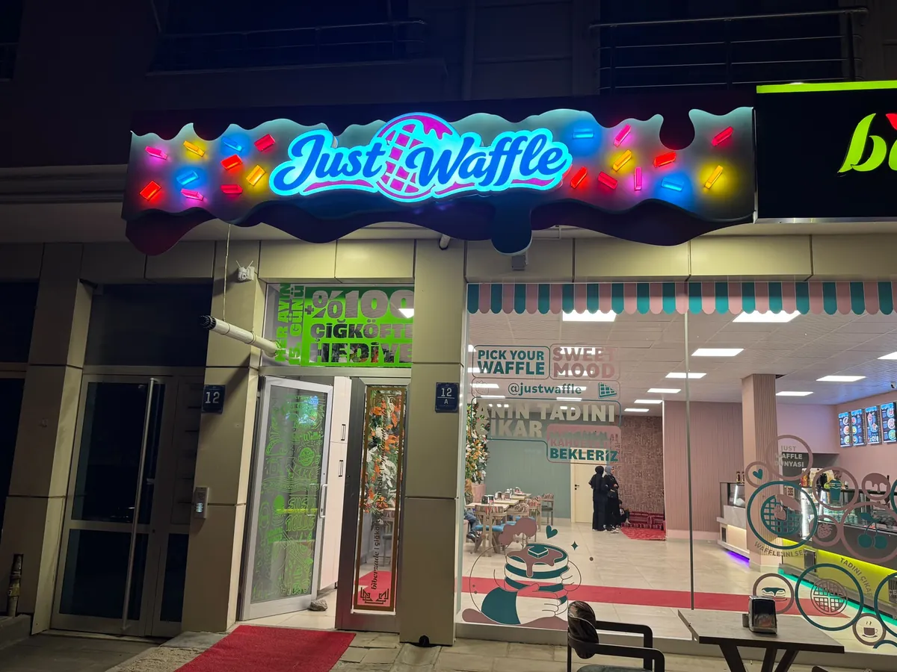
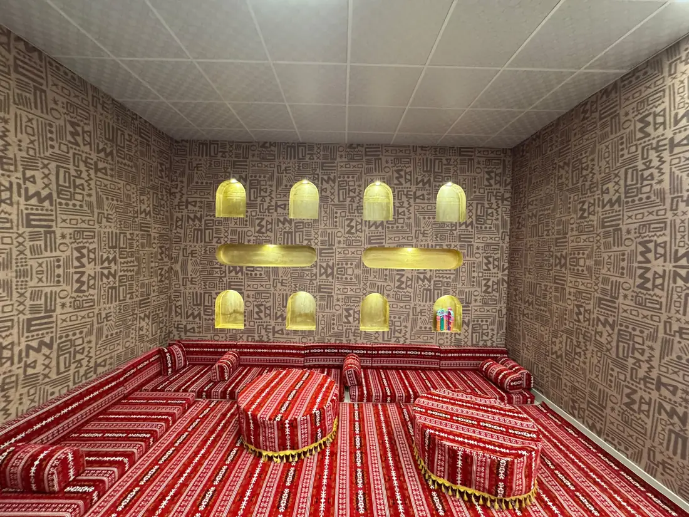
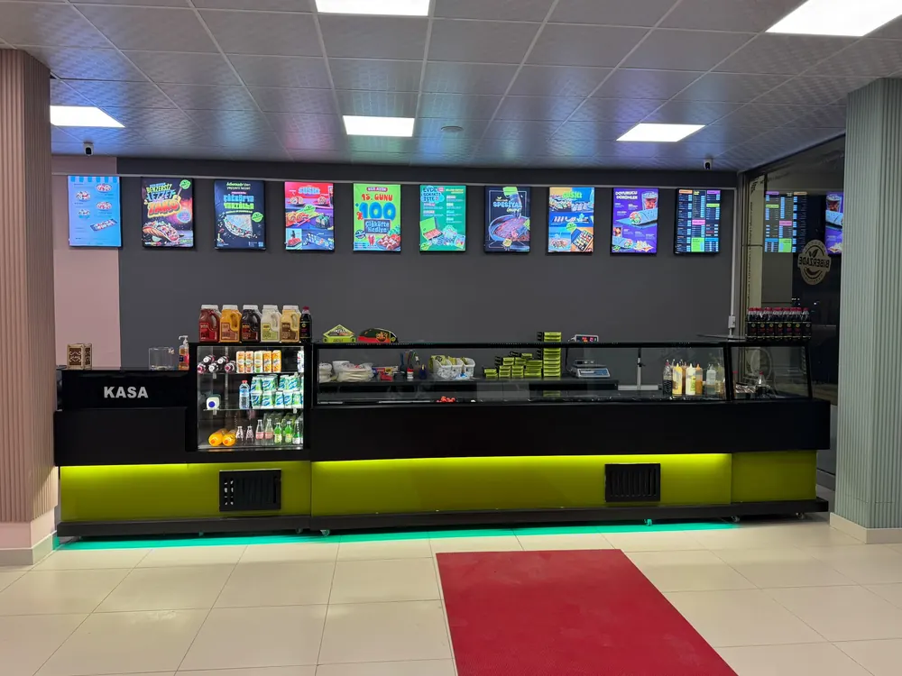
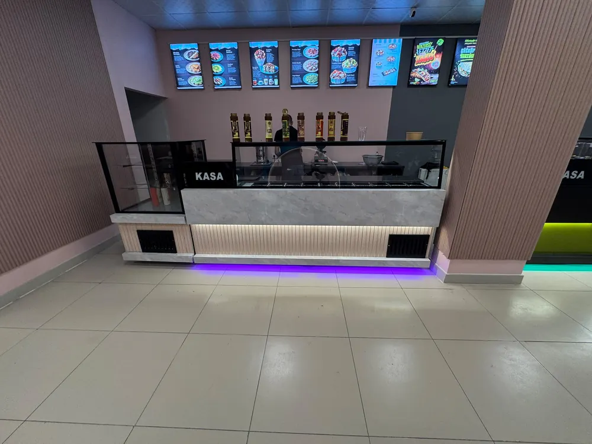
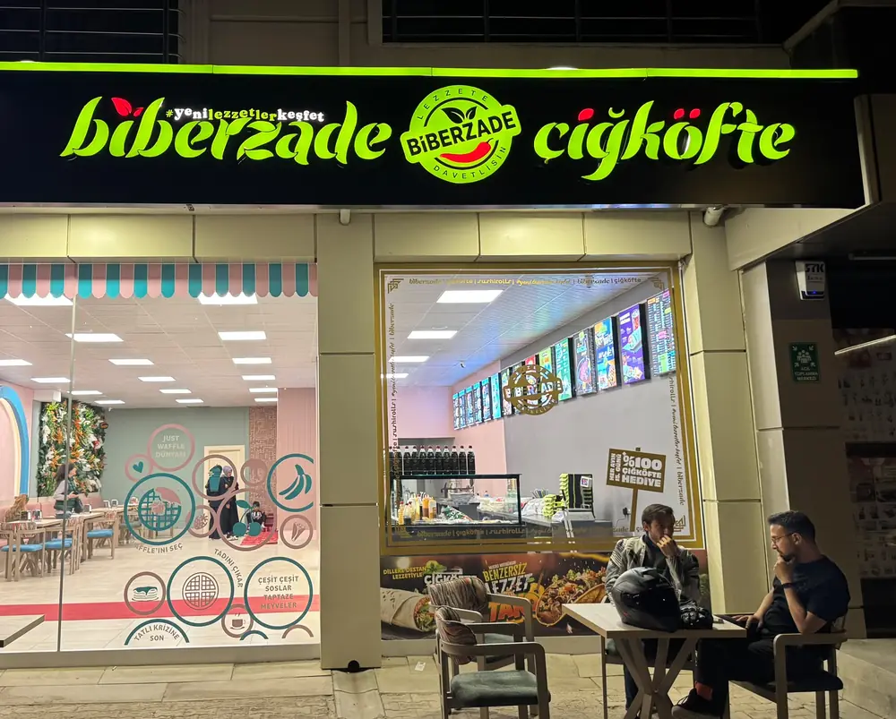
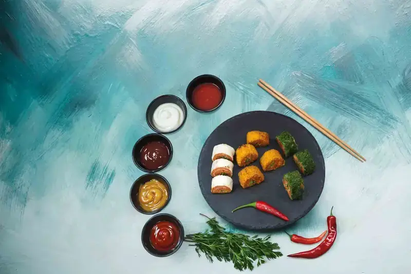

₺30 - ₺85
☕
İçecek Çeşitleri
Türk kahvesi, dibek kahvesi, americano, cappuccino, latte, limonata, nar suyu, portakal suyu ve daha fazlası.
Menüye Git →Sushi Çiğköfte, Jusst Waffle ve özel kahve çeşitleriyle Gölbaşı/Ankara'da eşsiz bir lezzet deneyimi sunuyoruz.


Biberzade Çiğköfte & Jusst Waffle olarak, Gölbaşı/Ankara'nın Karşıyaka semtinde, Ali Gaffar Okkan Caddesi üzerinde hizmet veriyoruz. Sushi çiğköfte, waffle ve özel kahve çeşitlerimizle damak çatlatan lezzetler sunuyoruz.
Her ürünümüzde taze malzeme, özel soslar ve sevgiyle hazırlanan tariflerimizle misafirlerimizi ağırlıyoruz. Gece 01:30'a kadar açık olmamız sayesinde günün her saati lezzetli bir mola verebilirsiniz.
Sushi çiğköfte çeşitlerimiz, waffle özel tariflerimiz ve özenle hazırlanan içeceklerimizle damak çatlatan bir deneyim.
Türk kahvesi, dibek kahvesi, americano, cappuccino, latte, limonata, nar suyu, portakal suyu ve daha fazlası.
Menüye Git →
California, cheddar, classic, crunchy, hindi fümeli, purple ve karışık sushi çiğköfte çeşitlerimiz.
Menüye Git →
Jusst Waffle özel tarifleriyle hazırlanan, enfes süslemeler ve soslarla buluşan waffle çeşitlerimiz.
Menüye Git →Geleneksel Türk sedirlerimizde, sıcacık ortamda arkadaşlarınızla lezzetli bir sohbet eşliğinde çiğköftenin, waffle'ın ve kahvenin tadını çıkarın.
Özel dizayn edilmiş şark köşemiz, geleneksel motifler ve modern dokunuşların bir araya geldiği samimi bir atmosfer sunuyor. Kalabalık gruplar için ideal.

Neon ışıklar, dijital menü panoları ve şark köşesiyle bir arada.



Biberzade'den kareler — sunumlarımız ve atmosferimiz.
.webp)



Gölbaşı'nın en lezzetli duraklarından birinde sizi ağırlamaktan mutluluk duyarız.